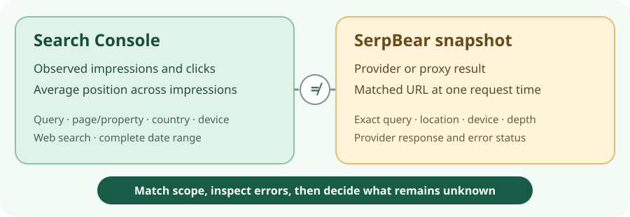

Search measurement · 19 Oct 2026 · source-only
When Search Console and a rank tracker disagree, check Search Console first.
For a site with authorized Search Console access, begin with its observed clicks, impressions and average position for the same query, canonical page, country, device, Web search type and complete dates. SerpBear v3.1.0 can add a repeated search-result snapshot, but only if that narrower measurement changes a named decision and its provider, cost, credentials and upkeep are acceptable. Neither number alone explains a traffic change or proves revenue.

The choice in two rows
| Route | Use it for | Stop or label unknown when |
|---|---|---|
| Existing Search Console first | Observed search clicks and impressions, and average position for an owned query/page or property over complete dates. | The query, canonical page versus property, country, device, Web search type or dates do not match; data is preliminary or too sparse. Do not call an average a live page rank. |
| Add SerpBear v3.1.0 conditionally | A recurring fixed query, location and device snapshot whose matched result URL and checked depth answer a specific question Search Console cannot. | Provider/proxy permission, credits, exact artifact, egress, access, backup or error review are unresolved. Do not install scraping merely to settle a visual dashboard discrepancy. |
Search Console defines average position as the topmost site/page result position averaged across impressions. No impression means no recorded position. Property and page grouping count differently. A manual or provider search can vary with place and other search conditions. Google’s position definition · Performance counting and freshness · dimensions and groupings
Fictional disagreement: what to check before changing a page
Suppose a tracker says “Not in first 10” at 08:15 UTC for “green roof starter guide,” while a Search Console chart appears to move from average position 9 to 14 for https://northstar.example/guides/green-roofs. All figures and the domain here are invented checklist prompts, not observed performance.
| Check | Record | Possible conclusion |
|---|---|---|
| 1 · Normalize Search Console | Search results → Web; exact query; canonical Pages row, not a property chart; US; desktop; two equal complete PT weeks; last update and no preliminary dots. Record clicks/impressions/position together (fictional 24/400/9 versus 23/390/14). | If clicks and impressions are broadly stable, the average alone does not justify a content change. If both shift materially across complete periods, investigate an observed performance change without claiming its cause. |
| 2 · Inspect the tracker sample | Exact query, tracked hostname and subdomains, returned matched URL, US or city, desktop, provider/proxy, timestamp, latest success/error, Basic/Custom/Smart strategy, pages actually requested, result count and response errors. | Basic normally checks only page 1, so “not in first 10” can coexist with an impression-weighted average of 14. A different matched page is a page-versus-domain mismatch. Empty, stale or partial failure is a collection problem, not proof the page disappeared. |
| 3 · Choose a next action | Compare sustained clicks/impressions and date trends. If disappearance is suspected, inspect this URL’s canonical/index evidence; inspect content and query intent separately. | Indexing: investigate only when missing relevant impressions and URL evidence support it. Content: consider a refresh only with sustained relevant change and independent intent/content evidence. Wait: for incomplete or weak data. Unknown: retain conflict after scope, depth and provider checks. |
These categories can overlap. A real click change and a broken provider can occur together. Google’s URL Inspection guidance distinguishes indexed status from a live test; eligibility does not guarantee appearance.
The page-versus-domain trap
In the v3.1.0 tagged getSerp() code, a supplied path is sought, but a result on the allowed hostname can still be accepted; the first matching hostname may be another page. This is a code-reading inference, not an observed scrape. Check SerpBear’s returned url/lastResult before comparing it with a Search Console page row. Configured subdomain matching widens the host set in v3.1.0. If the URL differs, compare property/domain data if that is the question, or mark the page comparison invalid.
Search Console query-filtered totals can differ from unfiltered totals because anonymized queries are omitted, and rows may be truncated. Canonical attribution can also differ from a visited URL. Compare equal complete Pacific Time dates and note preliminary data, rather than aligning a provider’s 08:15 UTC snapshot with a daily average as if they were simultaneous measurements. Google Performance data · groupings, canonical URLs and dates
What SerpBear v3.1.0 would add—and require
| Boundary | Tagged-source finding and decision consequence |
|---|---|
| Licence and exact version | The 27 March 2026 v3.1.0 release names commit 32204ee; tagged package metadata says 3.1.0 and the repository licence is MIT. This covers repository code, not provider services, dependencies, a hosted service or a latest image. The release list marked it latest when checked; that is not binary provenance or uptime evidence. |
| Where rank results come from | The tagged registry includes several SERP services and a proxy route. Transport code calls provider URLs or Google through a configured proxy; the proxy adapter parses returned HTML. This is outbound collection, not free Search Console ranking data. Account, API key, credits, proxy capacity and permission need separate verification. The living integrations table is not a current-cost quote. |
| Depth and missing results | Defaults select Basic, a five-page pagination limit if unspecified, and no Smart full fallback. Strategy code makes Basic check page 1 (nominally ten), Custom 1–10 pages, and Smart check around last known position with optional wider fallback. SerpApi and SearchApi have a native-100 path, but actual returned depth depends on the provider. Skipped positions and “not in first 10” are not proof of absence. Partial pagination failures can leave a zero result; inspect returned pages and errors, not only the badge. Strategy explanation |
| Schedule and failures | Cron code schedules scraping (daily by default), hourly failed-queue retries and optional Google-data/notification work. Refresh code records last success and lastUpdateError, then can queue failed keywords. A stale prior rank or queued retry is a measurement failure, not a ranking event. Issue #310 is one provider-depth report, not a failure rate. |
| State, keys and access | SQLite config uses data/database.sqlite; settings code also uses settings and failed-queue JSON with secrets encrypted using SECRET. Tagged Compose mounts /app/data but names towfiqi/serpbear:latest. A volume is not a tested backup, and latest does not pin v3.1.0. A recovery plan needs data and the matching secret/environment configuration. API docs give Bearer APIKEY read and refresh/cron/notify actions; restrict it because it can trigger provider-consuming work. Login, dashboard and notification exposure were not tested. |
| Optional Google features | Search Console display requires Google project/API, service-account key and property access; it displays Google historical metrics, not scraper rank. Ads keyword ideas/volume add OAuth/client, developer-token and account requirements, but are not needed for basic rank tracking. Living Ads docs state Basic Access is needed for Keyword Planning; the broader “test account” wording in the introduction should not be taken as sufficient. |
Tagged source establishes branches and defaults, not real-provider fidelity, current pricing, security posture or a tested image. Living docs may have changed after the tag. No exact executable artifact, isolated egress boundary, restore or provider response was available for this comparison.
Smallest useful next test
- Record the fixed keyword, intended page, country/city, device, provider, timestamp, allowed depth and the decision a snapshot would change. If that decision is still about actual clicks and impressions, stay in Search Console.
- For an isolated code-handling test, pin the source commit and image digest. Use fictional keywords and a mocked provider that returns first-page, second-page, empty, malformed and partial-error responses. Block external egress and verify zero provider calls. Inspect matched URL, checked depth, last success/error, retry queue, access and a restore from complete data plus secret backup.
- Only if a real rank snapshot remains useful, separately verify current provider/proxy permission, credit budget and logging, then approve a minimal probe. A mocked fixture would test app handling, not Google rank accuracy or business outcomes.
No fixture, live search, installation, API call, notification or restore was performed for this source-only report.